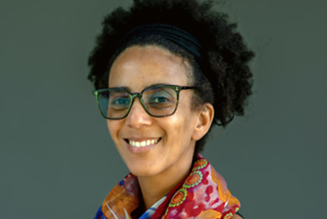

Our Tech Heroes
Meet two women who contributed to technology
while challenging bias and barriers in the field.

Dr. Gladys West
Mathematician and GPS ContributorDr. Gladys West was an American mathematician whose work helped create the mathematical foundation for modern GPS technology. She grew up in rural Virginia and pursued education as a way to build a different future for herself. Dr. Gladys West studied mathematics at Virginia State College, a Historically Black College and University, where she earned both her bachelor's and master's degree. In 1956, she began working as a mathematician at the U.S. Naval Provision Ground in Dahlgren, Virginia.

Dr. Timnit Gebru
AI Researcher and AI Ethics AdvocateDr. Timnit Gebru is an AI researcher whose work focuses on bias, representation, and the social impacts of artificial intelligence. She earned her PhD from the Stanford Artificial Intelligence Laboratory, where she studied computer vision. She later worked on algorithmic bias and the ethical implications of AI at Microsoft Research and Google. She also co-founded Black in AI and later founded the Distributed AI Research Institute (DAIR), which supports research focused on the social impacts of AI.